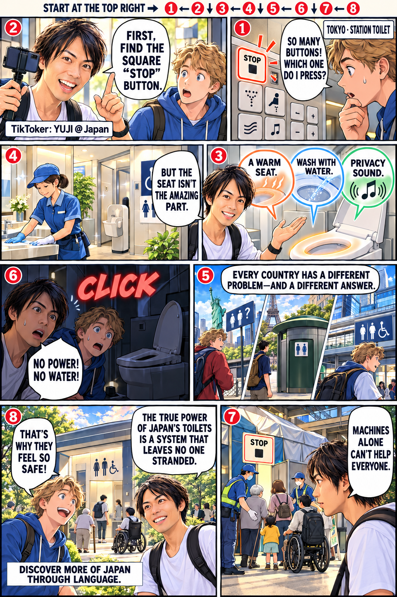
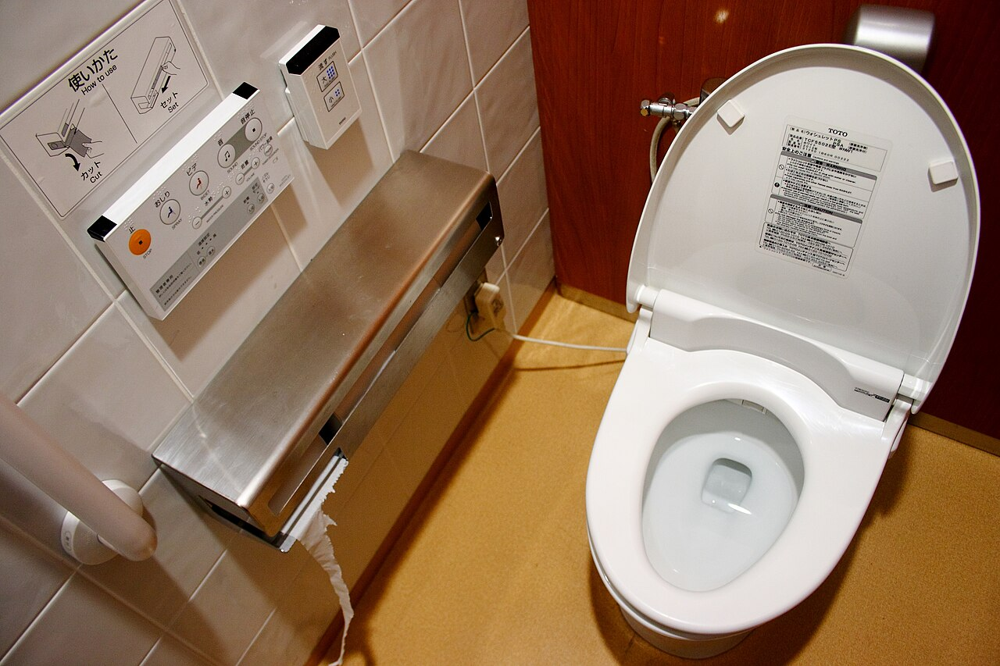

Japan with
Japan withMount Fuji has no single face.
See Japan’s most famous mountain from north, east, southeast, south and west—and watch the perfect cone come apart.
Read the full story →ONE FUJI
READ →
Why do Japan’s toilets feel so different?
Read the visual story, then unfold the research behind it.

Stories that change the map.
Mount Fuji has no single face.
Five directions reveal five different mountains—and the volcano behind the perfect cone.

Japan’s toilets are famous for buttons. The real marvel is everything around the seat.
Washlets, free access and inclusive design—compared fairly with New York and Paris.

Japan’s convenience stores do not just sell food. They sell time.
Konbini versus the U.S., UK and Taiwan—and the labor hidden behind effortless service.

Dragon Ball’s biggest real-world destination is not in Japan.
Beerus, Tokyo Station, Qiddiya—and the difficult economics of building a world.

Dashi, vegetables and hot ramen—press the button.
A verified guide to the machines that reveal how Japan really works.
Japan sees five worlds at once.
Security, history, culture, community and possibility—a map beyond national stereotypes.
The jobs that pay most are not the jobs Japan wants most.
Salary, stability and dreams—compared across generations and countries.

One week in Japan can cost ¥76,000—or ¥1.1 million.
Four actual travel styles, seasonal trade-offs and conversions into dollars, euros, pounds and pesos.

The five places that reveal five different Japans.
A first-trip route built for contrast, cultural depth and the moments after the photograph.

Your first trip is not a checklist. Do these five things first.
Five small systems that make the whole journey calmer, kinder and more spontaneous.

10 places. Zero filler.
Tokyo energy, Kyoto stillness, island art, volcanic landscapes and a town built around hot water. A trip-shaping list that explains who each place is really for.
Open the Japan 10 →Four manga that became worlds.
For the grand adventure
One Piece — the phenomenon with a deceptively emotional engine.
For beautiful quiet
Frieren — the fantasy that begins after the heroes already won.
For a first sports obsession
Blue Lock — football rebuilt as a psychological pressure chamber.
For dark momentum
Chainsaw Man — spectacle hiding a story about ordinary needs.

Japan, opened by Yuji.
I’m Yuji Shimizu. I walk through Japan, teach its language, and build DraMap—an iPhone app for learning Japanese while playing. Japan Unfolded is independently published by me, so the recommendations and the app connection are transparent.
Learn Japanese while playing with DraMap.
Turn the language around you into part of an adventure.